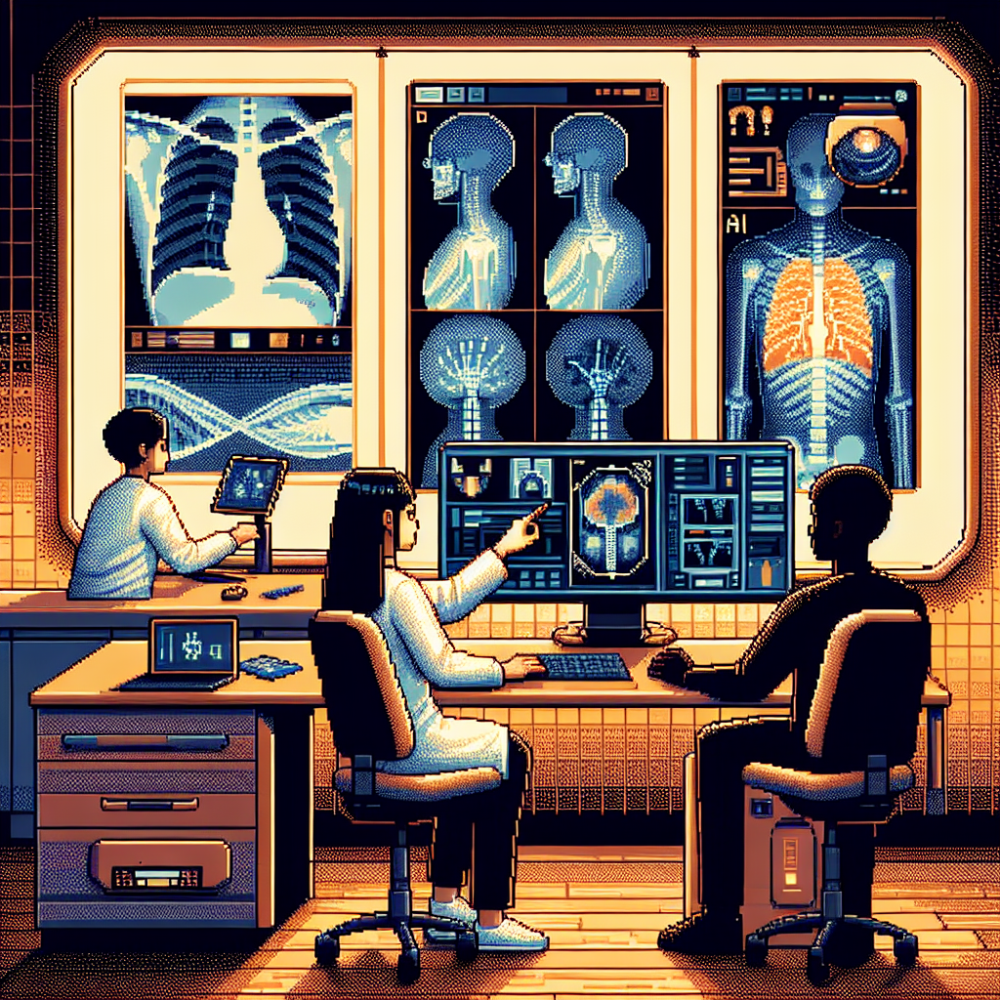

Why AI will never replace the radiologist
In his recent blog post titled "Why AI will never replace the radiologist," Python instructor Jose delves into the world of machine learning and its application in radiology. Jose, who is passionate about teaching others the intricacies of Python and machine learning, shares his insights on the topic.
In the post, Jose discusses the drawbacks of relying solely on machine learning algorithms in the field of radiology. Despite the advancements in AI technology, Jose argues that there are certain aspects of radiology that cannot be replicated by artificial intelligence. He emphasizes the importance of human expertise and intuition in interpreting complex medical images, something that he believes AI currently lacks.
By sharing his perspective on the limitations of AI in radiology, Jose sparks a thought-provoking conversation about the role of technology in healthcare. His blog post serves as a reminder of the unique skills and abilities that radiologists bring to the table, underscoring the continued relevance of human professionals in the field.
For more insightful content on tech, machine learning, and radiology, be sure to follow Jose's blog for future updates and engaging discussions.